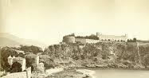

A várost genovai kolóniaként alapították 1215-ben. 1297 óta a Grimaldi-ház uralma alatt áll, amikor François Grimaldi és katonái ferences szerzetesnek álcázva elfoglalták Monaco erődjét
1789-től 1814-ig a város francia fennhatóság alatt állt. 1815-től 1860-ig a bécsi kongresszus döntése alapján Szardínia protektorátusa volt.
1861-ben a francia-monacói szerződésben elismerték az ország függetlenségét. Ugyanakkor az ország elvesztette területének 95%-át – Nizzát és vidékét – Franciaország javára.
Monaco hercege az 1911-es alkotmányig abszolút uralkodó volt. A versailles-i békeszerződés kiegészítéseként a franciák védnökséget vállaltak Monaco felett.
III. Rainier herceg, Monaco előző uralkodója 1949-ben lépett trónra apja, II. Lajos után. Az 1962-es alkotmány eltörölte a halálbüntetést, szavazati jogot biztosít a nőknek, és létrejött az alapvető szabadságjogokat biztosító Legfelső Bíróság.
1993-ban Monaco az ENSZ teljes jogú tagja lett. 2005. április 6-án meghalt III. Grace Kelly amerikai filmszínésznőtől 1958-ban született fia, Albert herceg követte a trónon, II. Albert néven.
Egy 2002-es francia-monacói szerződés szerint, ha a monacói trónnak nincs örököse, a hercegség önálló állam marad, és nem válik Franciaország részévé (ahogy az a korábbi szerződésekben volt).
Monaco 2004. október 5-én az Európa Tanács teljes jogú tagjává vált.
Monaco egyik legfontosabb bevételi forrása a turizmus, a turistákat főleg a klíma és a kaszinó vonzza. 2001-ben az üdülőhajók által használt mólót ki is egészítették a nagy forgalom miatt.
Az országban nincs jövedelemadó, a társasági adó alacsony, ezáltal adóparadicsom mind a lakosság, mind a helyi bejegyzésű cégek számára.
Bizonyos üzleti szektorok, mint a dohányipar és a posta állami monopóliumok. Az életszínvonal rendkívül magas.
Az 5000 monacói őslakos a világ egyik legelkényeztetettebb etnikai csoportja: nem fizetnek adót, nagylelkű állami támogatásokat kapnak, mert a kormányzati épületekben a lakbéreket mesterségesen alacsony szinten tartják.
A monacóiak elsőbbséget élveznek az alkalmazás területén, 1997-ben összesen 35 munkanélküli volt az országban.
Egy közelmúltban készült francia jelentés szerint Monacóban lazák a pénzmosásra vonatkozó törvények és szabályok, beleértve a kaszinó szabályait is, és Monaco kormánya akadályozza az ilyen jellegű ügyek kivizsgálását.
Monaco nem tagja az Európai Uniónak, de nagyon szoros kapcsolatban állnak (vámunió, közös pénznem). Az euró használati joga mellett az államnak joga van saját euróérméket verni.
Kedvező adózási szabályai miatt is sokan választják lakhelyül Monacót olyanok, akiknek ez számít és akik megengedhetik ezt maguknak, például csúcssportolók. 2008-ban egy időre Monte-Carlóba költözött például a magyar teniszező, Szávay Ágnes is.
Monaco a világ legsűrűbben lakott országa, és a legnagyobb népsűrűséggel rendelkező település, Makaó után.
Az őslakos monacóiak kisebbségben vannak országukban. A legnagyobb népcsoportot a franciák adják (47%), míg a monacóiak és az olaszok 16-16%-ot alkotnak, a maradék 21% pedig 125 különböző ország állampolgáraiból tevődik össze.
Az ország hivatalos nyelve a francia, de az angolt, az olaszt és a helyi monacói nyelvet (sokan csak a ligur nyelv dialektusának tartják, de az erős francia és okcitán hatás miatt számos eltérés van a kettő között, egyik sem tekintendő viszont az olasz nyelv dialektusának) szintén beszélik.
Monaco népessége 38 400 fő volt 2015-ben.
A legnagyobb népcsoportok: francia 28,4%, monacói őslakos 21,6%, olasz 18,7%, brit 7,5%. További jelentősebb csoportok: belga 2,8%, német 2,5%, svájci 2,5%, amerikai 1,2%.